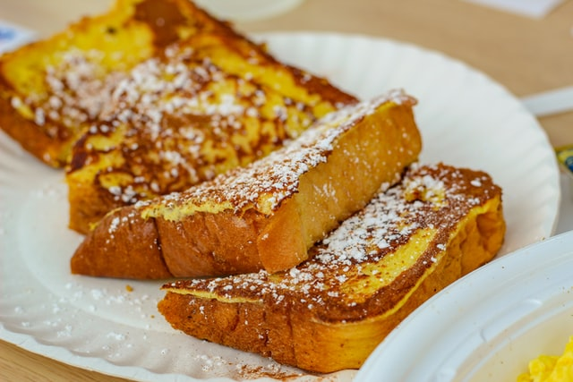

French Toast

Description
The only french toast recipe that you'll ever need, simple, yet
superbly delicious.
Ingredients
- 12 slices thick-cut white bread
- 1/4 cup all-purpose flour
- 1/2 teaspoon ground cinnamon
- 1 tablespoon sugar
- 1 pinch salt
- 1 cup milk
- 1 teaspoon vanilla extract
- 3 eggs
Steps
- Add flour to a large bowl, and whisk in eggs, milk, vanilla extract,
sugar, salt, and ground cinnamon until smooth.
- Heat an oiled griddle or frying pan over medium heat.
- Place slices of bread into the wet mixture and let them soak until
saturated.
- Cook slices on the griddle or frying pan until both sides are golden
brown.